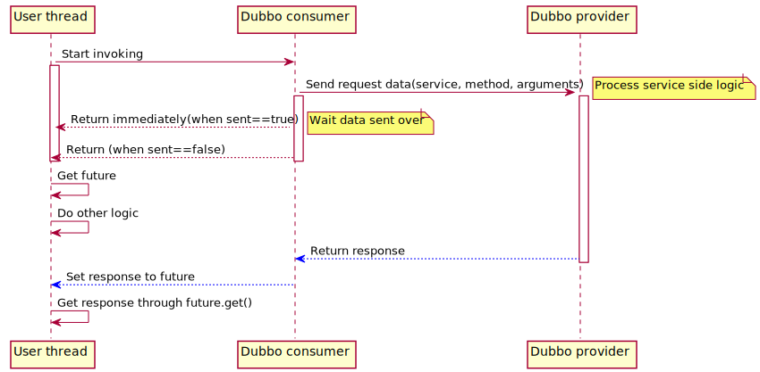

Dubbo 关于同步/异步调用的几种方式
我们知道，Dubbo 缺省协议采用单一长连接，底层实现是 Netty 的 NIO 异步通讯机制；基于这种机制，Dubbo 实现了以下几种调用方式：
- 同步调用
- 异步调用
- 参数回调
- 事件通知
同步调用
同步调用是一种阻塞式的调用方式，即 Consumer 端代码一直阻塞等待，直到 Provider 端返回为止；
通常，一个典型的同步调用过程如下：
- Consumer 业务线程调用远程接口，向 Provider 发送请求，同时当前线程处于
阻塞状态； - Provider 接到 Consumer 的请求后，开始处理请求，将结果返回给 Consumer；
- Consumer 收到结果后，当前线程继续往后执行。
这里有 2 个问题：
- Consumer 业务线程是怎么进入
阻塞状态的？ - Consumer 收到结果后，如果唤醒业务线程往后执行的？
其实，Dubbo 的底层 IO 操作都是异步的。Consumer 端发起调用后，得到一个 Future 对象。对于同步调用，业务线程通过Future#get(timeout)，阻塞等待 Provider 端将结果返回；timeout则是 Consumer 端定义的超时时间。当结果返回后，会设置到此 Future，并唤醒阻塞的业务线程；当超时时间到结果还未返回时，业务线程将会异常返回。
异步调用
基于 Dubbo 底层的异步 NIO 实现异步调用，对于 Provider 响应时间较长的场景是必须的，它能有效利用 Consumer 端的资源，相对于 Consumer 端使用多线程来说开销较小。
异步调用，对于 Provider 端不需要做特别的配置。下面的例子中，Provider 端接口定义如下：
public interface AsyncService {
String goodbye(String name);
}
Consumer 配置
<dubbo:reference id="asyncService" interface="com.alibaba.dubbo.samples.async.api.AsyncService">
<dubbo:method name="goodbye" async="true"/>
</dubbo:reference>
需要异步调用的方法，均需要使用 <dubbo:method/>标签进行描述。
Consumer 端发起调用
AsyncService service = ...;
String result = service.goodbye("samples");// 这里的返回值为空，请不要使用
Future<String> future = RpcContext.getContext().getFuture();
... // 业务线程可以开始做其他事情
result = future.get(); // 阻塞需要获取异步结果时，也可以使用 get(timeout, unit) 设置超时时间
Dubbo Consumer 端发起调用后，同时通过RpcContext.getContext().getFuture()获取跟返回结果关联的Future对象，然后就可以开始处理其他任务；当需要这次异步调用的结果时，可以在任意时刻通过future.get(timeout)来获取。
一些特殊场景下，为了尽快调用返回，可以设置是否等待消息发出：
sent="true"等待消息发出，消息发送失败将抛出异常；sent="false"不等待消息发出，将消息放入 IO 队列，即刻返回。
默认为fase。配置方式如下：
<dubbo:method name="goodbye" async="true" sent="true" />
如果你只是想异步，完全忽略返回值，可以配置 return="false"，以减少 Future 对象的创建和管理成本：
<dubbo:method name="goodbye" async="true" return="false"/>
此时，RpcContext.getContext().getFuture()将返回null。
整个异步调用的时序图如下：

此示例代码位于：https://github.com/dubbo/dubbo-samples/tree/master/dubbo-samples-async
参数回调
参数回调有点类似于本地 Callback 机制，但 Callback 并不是 Dubbo 内部的类或接口，而是由 Provider 端自定义的；Dubbo 将基于长连接生成反向代理，从而实现从 Provider 端调用 Consumer 端的逻辑。
Provider 端定义 Service 和 Callback
public interface CallbackService {
void addListener(String key, CallbackListener listener);
}
public interface CallbackListener {
void changed(String msg);
}
Provider 端 Service 实现
public class CallbackServiceImpl implements CallbackService {
private final Map<String, CallbackListener> listeners = new ConcurrentHashMap<String, CallbackListener>();
public CallbackServiceImpl() {
Thread t = new Thread(new Runnable() {
public void run() {
while (true) {
try {
for (Map.Entry<String, CallbackListener> entry : listeners.entrySet()) {
try {
entry.getValue().changed(getChanged(entry.getKey()));
} catch (Throwable t) {
listeners.remove(entry.getKey());
}
}
Thread.sleep(5000); // timely trigger change event
} catch (Throwable t) {
t.printStackTrace();
}
}
}
});
t.setDaemon(true);
t.start();
}
public void addListener(String key, CallbackListener listener) {
listeners.put(key, listener);
listener.changed(getChanged(key)); // send notification for change
}
private String getChanged(String key) {
return "Changed: " + new SimpleDateFormat("yyyy-MM-dd HH:mm:ss").format(new Date());
}
}
Provider 端暴露服务
<bean id="callbackService" class="com.alibaba.dubbo.samples.callback.impl.CallbackServiceImpl"/>
<dubbo:service interface="com.alibaba.dubbo.samples.callback.api.CallbackService" ref="callbackService" connections="1" callbacks="1000">
<dubbo:method name="addListener">
<dubbo:argument index="1" callback="true"/>
<!--<dubbo:argument type="com.demo.CallbackListener" callback="true" />-->
</dubbo:method>
</dubbo:service>
这里，Provider 需要在方法中声明哪个参数是 Callback 参数。
Consumer 端实现 Callback 接口
CallbackService callbackService = ...;
callbackService.addListener("foo.bar", new CallbackListener() {
public void changed(String msg) {
System.out.println("callback1:" + msg);
}
});
Callback 接口的实现类在 Consumer 端，当方法发生调用时，Consumer 端会自动 export 一个 Callback 服务。而 Provider 端在处理调用时，判断如果参数是 Callback，则生成了一个 proxy，因此服务实现类里在调用 Callback 方法的时候，会被传递到 Consumer 端执行 Callback 实现类的代码。
上述示例代码位于：此示例代码位于：https://github.com/dubbo/dubbo-samples/tree/master/dubbo-samples-callback
这种调用方式有点像消息的发布和订阅，但又有区别。比如当 Consumer 端 完成了Callback 服务的 export 后，如果后续重启了，这时 Provider 端就会调不通；同时 Provider 端如何清理掉这个 proxy 也是一个问题。
事件通知
事件通知允许 Consumer 端在调用之前、调用正常返回之后或调用出现异常时，触发 oninvoke、onreturn、onthrow 三个事件。
可以通过在配置 Consumer 时，指定事件需要通知的方法，如：
<bean id="demoCallback" class="com.alibaba.dubbo.samples.notify.impl.NotifyImpl" />
<dubbo:reference id="demoService" check="false" interface="com.alibaba.dubbo.samples.notify.api.DemoService" version="1.0.0" group="cn">
<dubbo:method name="sayHello" onreturn="demoCallback.onreturn" onthrow="demoCallback.onthrow"/>
</dubbo:reference>
其中，NotifyImpl 的代码如下：
public class NotifyImpl implements Notify{
public Map<Integer, String> ret = new HashMap<Integer, String>();
public void onreturn(String name, int id) {
ret.put(id, name);
System.out.println("onreturn: " + name);
}
public void onthrow(Throwable ex, String name, int id) {
System.out.println("onthrow: " + name);
}
}
这里要强调一点，自定义 Notify 接口中的三个方法的参数规则如下：
oninvoke方法参数与调用方法的参数相同；onreturn方法第一个参数为调用方法的返回值，其余为调用方法的参数；onthrow方法第一个参数为调用异常，其余为调用方法的参数。
上述配置中，sayHello方法为同步调用，因此事件通知方法的执行也是同步执行。可以配置 async=true让方法调用为异步，这时事件通知的方法也是异步执行的。特别强调一下，oninvoke方法不管是否异步调用，都是同步执行的。
事件通知的示例代码请参考：https://github.com/dubbo/dubbo-samples/tree/master/dubbo-samples-notify